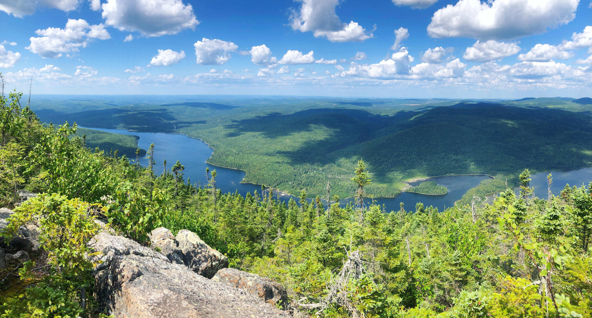

This summer, I took advantage of my time in the beautiful province of New Brunswick and went on a weekend hiking trip at Mount Carleton Provincial Park. New Brusnwick has several extraordinary parks, but this one exceeded my expectations and in my opinion, really stands out from the rest.

For me, this experience was unlike any I have ever had as Mount Carleton is the highest peak in all of the Maritime Provinces. Travellers come from all over the world to experience this as part of the International Appalachian Trail. One would think that this would be the most difficult hike in the entire park, but Mount Sagamook actually wins in that regard.
The Mount Sagamook trail is the most strenuous hike in the park and requires several hours to complete. The terrain is much harder to navigate and it is extremely steep. If you plan on taking this route, it is imperative that you bring enough water and wear proper footwear. It is certainly labeled for more experienced hikers, but do not let this intimidate you from trying it out. The views from the peak are worth it!